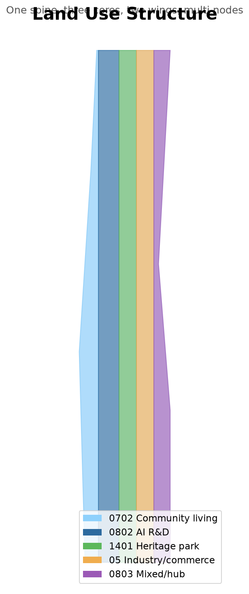
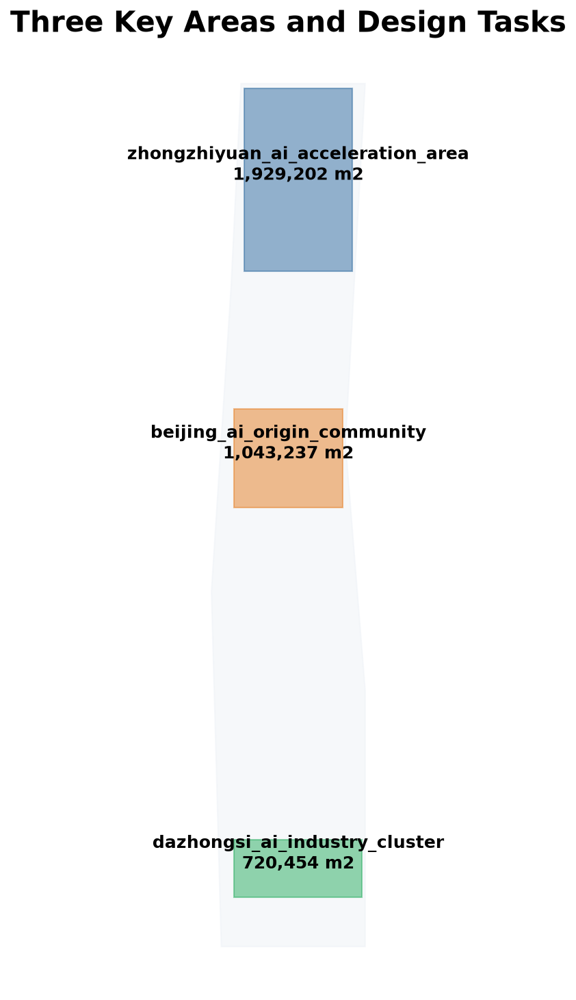
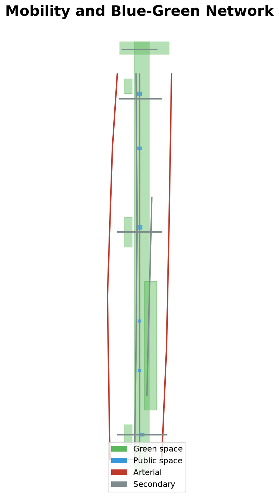
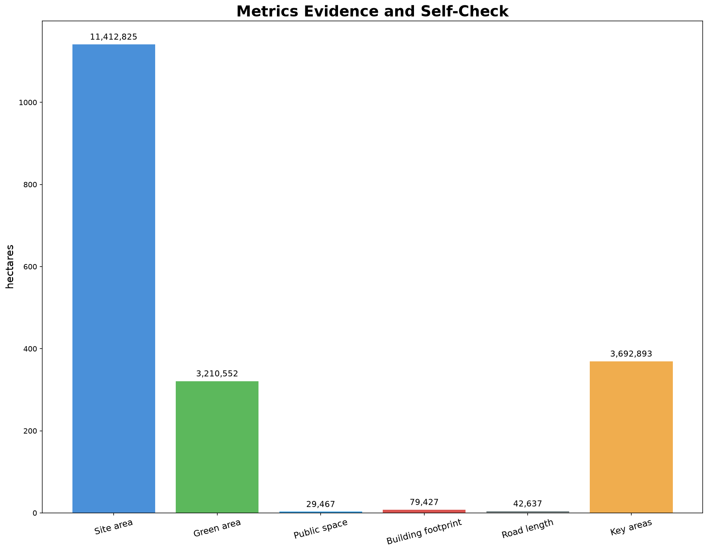

Design Basis and Source List
Based on announcement and taskbook; provisional boundary for generation and self-check only.
Three-Level Scope Framework
Research 43.6 km², design 11.4 km², key areas 368.4 ha.
Coordinated Research Area
Five-ring ecosystem; six global cases as background reference.
Overall Design Area
One spine, three cores, two wings; statutory controls pending.
Detailed Design of Key Areas
Zhongzhiyuan, AI Origin Community, Dazhongsi differentiated functions.
AI Innovation Ecosystem, Personas, and AI+ Scenarios
12 scenario cards, 6 personas including vulnerable groups, scenario-space-operation matrix.
Land Use, Building Scale, and Strategy
Building footprint 79,427 m², estimated floor area 254,165 m².
Transport, Rail, Municipal Infrastructure
Road length 42,637 m, distributed compute and sensing concept.
Blue-Green Network, Public Space, and Urban Character
Green ratio 28.13%, public space ratio 0.2582%.
Renewal Projects, Implementation Policy, and Phasing
South-middle-north phasing; four-season events; long-term operation governance.
Metrics, Area Recalculation, and Compliance Matrix
Core metrics recomputable from geometry; FAR/height remain unknown.
Risk, Copyright, and Compliance
Conceptual; COMMUNITY-DISPLAY-ONLY; no unauthorized assets.
References
See sources.json.